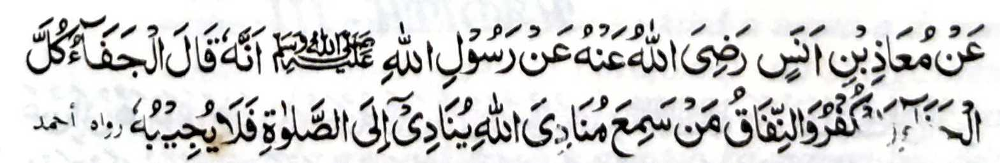

Miyakathitayan ko Mo'adh Bin Anas a piyanothol iyan a mata-an a pitharo o Rasulollah (Sallallaho 'Alaihi Wasallam), "Miya ilang sa tanto a kailang, go ikha-kapir go ikha-Munapik so tao a maneg iyan so gi-i pakapananawagen o Allah a ipephananawag iyan so Sambayang a da niyan paratiyaya-a."
Miya-aloy sangka-iya a Hadith, a so di katapi ko Barajoma ko oriyan o kanega ko Bang na di paparangayan a Muslim ka dadabi-atan a Kapir odi na Munapik. Tanto a masakit a lalangan!
Si-i ko isa a Hadith, na pitharo iyan, "So di katapi ko Barajoma ko oriyan o kanega ko Bang na kiyatatangka-an den a kabaloy o tao a minitaralo a ka da-a ontong iyan ago minitaralo a pekhadoan-doanan."
So Solaiman bin Abi Hathmah na isa ko miyatindos a tao ko paganay a manga masa o Islam. lnimbawata sekaniyan ko masa o Nabi (Sallallaho 'Alaihi Wasallam), ogaid na tanto a kangoda-an na da niyan maparoli so mapiya a okor a makaneg sa isa bo a Hadith si-i rekaniyan. Si-i ko kiya baloy o Umar (Radhiallaho ’Anho) a Kalipah, na sekaniyan i miyabaloy a sasarigan sa padi-an. Miyaka isa alongan na so Umar (Radhiallaho 'Anho) na miya inengka iyan a da maped ko Barajoma a Sambayang ko Soboh. Somiyong so Umar (Radhiallaho 'Anho) ko walay niyan na ini-iza iyan ko ina iyan ino da maped so Solaiman ko Sambayang a Soboh. Pitharo iyan, "Miyababasa gawi-i na manambayang sa Sunnat, sa tiyaban sekaniyan o torog iyan ko wakto a Sobch.” Sabap ro-o na pitharo o Umar (Radhiallaho 'Anho), 'Tomo-on aken so Sambayang a Soboh a Barajoma a di so bako panambayang ko mababasa gawi-l sa manga Sunnat."